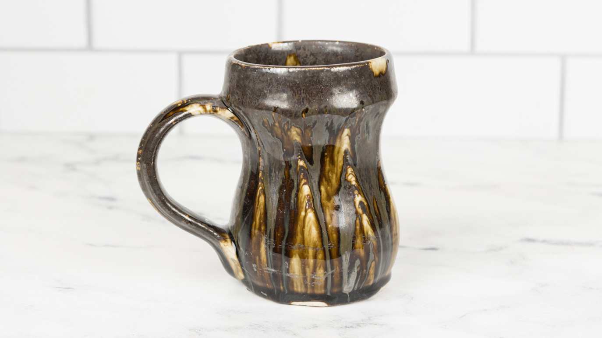
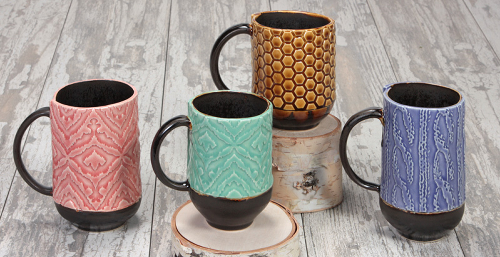
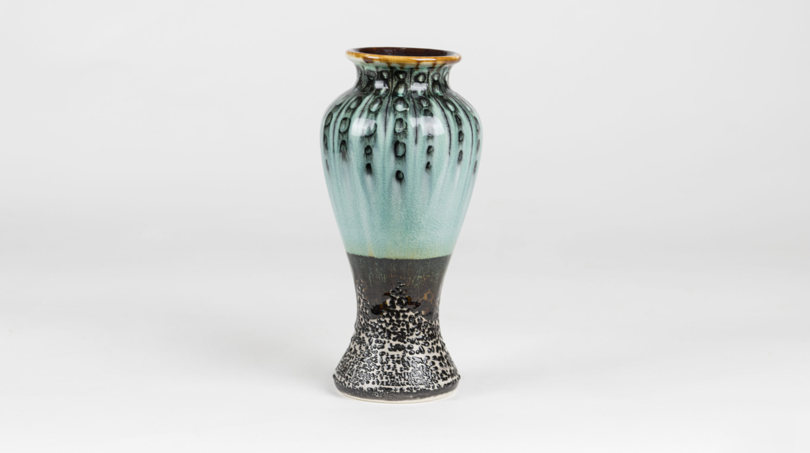
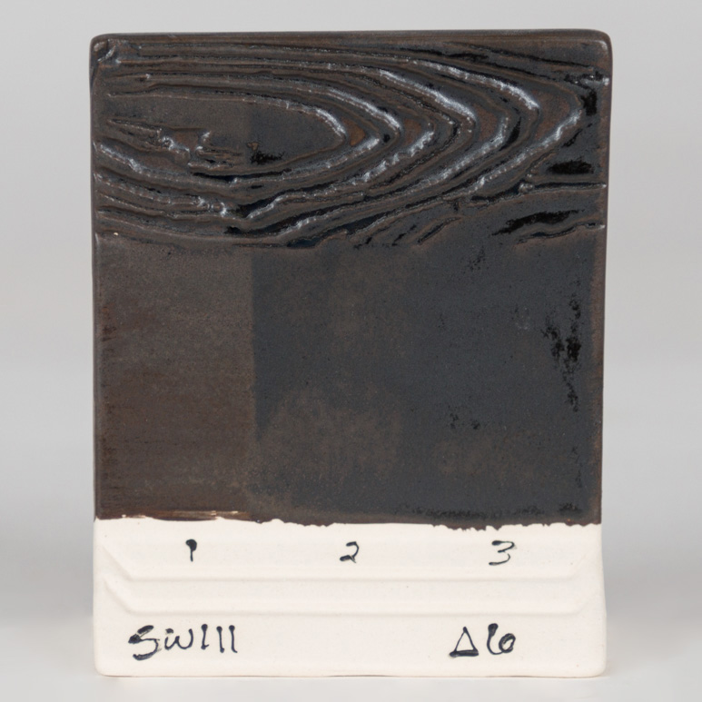
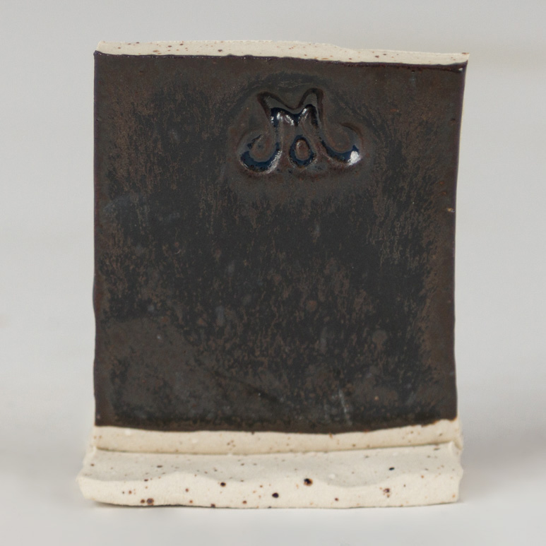
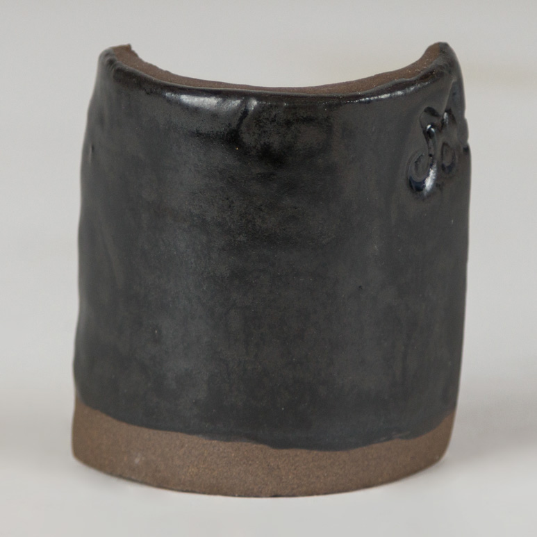
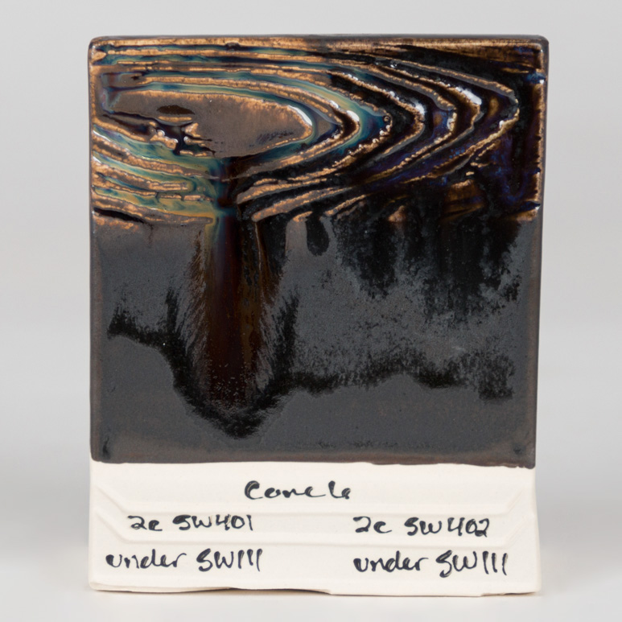

Commercial
Mayco SW-111 Wrought Iron
A cone 6 oxidation glaze that mimics high-fire oil-spot surfaces with a dappled black gloss-matte finish at just two coats.
Effect
Finish tags: gloss-matte, black, dappled
Effect tags: reduction-look, oil-spot, thickness-responsive
Atmosphere: oxidation
Use Notes
Application: Mayco says two coats at cone 6 oxidation produce the oil-spot-like surface. Thinner application reads browner, thicker application reads blacker, and speckled clay bodies may bubble because of the glaze's high manganese content.
Food safe: Yes
Sources: mayco-wrought-iron, mayco-project-todd-mug-wrought-iron-oxblood, mayco-project-handbuilt-texture-mugs, mayco-project-cone-6-crackle-vase








Notes
Wrought Iron covers the oil-spot side of reduction aesthetics more directly than most commercial cone 6 products.
- It should be tested on both smooth and speckled stoneware because the manufacturer calls out bubbling risk on speckled bodies.
- This is one of the better commercial candidates when the target surface is dark, metallic, and slightly crystalline rather than red or shino-like.
- The record now includes official Mayco project photos so the page shows actual finished ware, not only the base product image.